マイルドになった漢（本にゃん比） [病院]
21日は梅吉の定期診察でした。

キャリーを出したらいそいそと入る梅吉さん。完全に楽しいお遊び処。
キャリー≠病院なのは本当にありがたいことです (^▽^;)
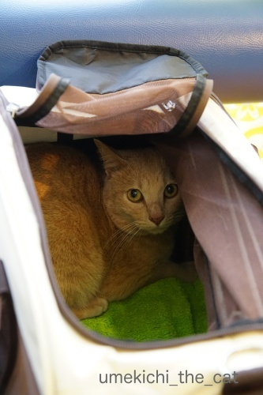
病院に到着。流石にキャリーの隅で小さくなってますよー。
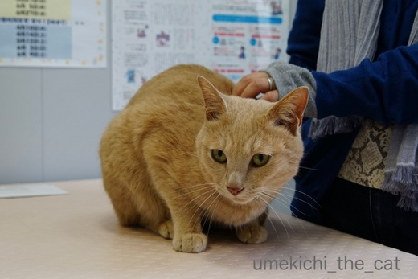
診察台の上で先生待ち。
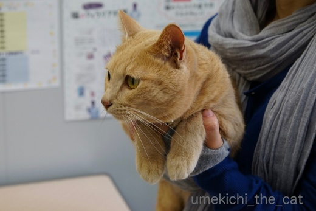
![[猫]](https://blog.ss-blog.jp/_images_e/101.gif) むこうからてきがやってくるんやで・・・・・
むこうからてきがやってくるんやで・・・・・
扉を凝視して先生を待ちますよ。

はい＾＾心拍数を計ってお腹モミモミ〜。
今回は「うぉーん うぉーん」唸ってはいましたが恒例の「シャーッ！！！」は無し。
どうしたんだ、梅吉・・・・・
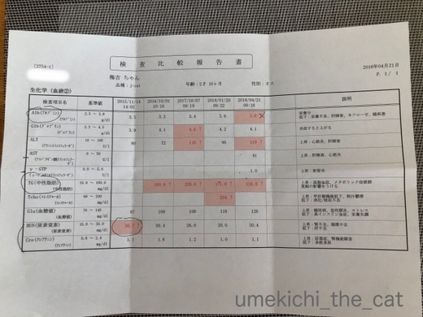
今回の採血結果。
依然基準値越えではありますが中性脂肪値が130くらいまで下がって来ました。
同時に気がかりだった心拍数も今回は130程。
先生もびっくりするくらいの改善傾向。
お薬を追加の必要も無くなりましたよー＾＾
採血の時も（うぉーうぉー叫んではいましたがw)ずいぶん大人しかったようで
「心拍数が下がって気性も穏やかに（本にゃん比）なったんじゃ？梅吉くん！！」
なんて先生も大喜び。シャーッ！！！も言わなかったしね。
このくらい大人しく採血できるなら、となんと！
３ヶ月後にはお腹のエコー検査をすることになりました。
飼い主としては「ほんまにできるんかいな」とちょっぴり思ってますが
先生もプロなので出来るのでしょう。多分。がんばれ、先生(*>艸<)
臓器そのものの状態も気になるところだったのでもちろん良い機会でもありますよ。
梅吉も頑張れー！！
お誕生日前日の病院、まずまずの結果で心底ホッとしました＾＾
「梅吉が毛玉を吐かない」と先生に聞いてみるとずばり「健康な猫は吐きません」と。
（以下梅吉のような短毛種の場合のお話になります）
本来毛玉はうんPと一緒に出てくるもので
頻繁に吐き出す場合には内臓の疾患が疑われる場合があるとのこと。（主に肝臓）
もちろん入浴後に毛づくろいをして大量に毛玉が体内に入った時などは
吐いちゃっても問題はありません。
先代のゲロゲロっ子は確かに肝臓が悪かった・・・
と納得の先生のお返事でした。
梅吉、大変りっぱなうんPをするのでその中に毛玉がある模様。
良かった良かった＾＾
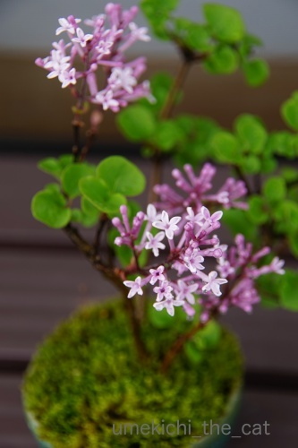
先日は植物園で見てきたライラック。
我が家の盆栽ライラックも咲き出しました。
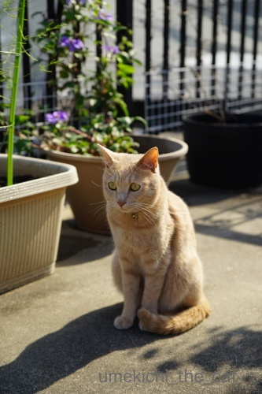
クレマチスも咲き出しました。
クレマチスにボケが入っちゃっていますが「クレマチスとわし」。
ベランダに出たくて催促してくる梅吉ですw
 ↑ガブッと一押し↑
↑ガブッと一押し↑
次々盛りを迎えるお花を追って週末はお花見ハシゴ。
まずは葛井寺で藤見。
西国三十三所の５番目の札所である葛井寺。
藤も見頃＆お遍路の方が集まって法会をしていたので大賑わいでした。
境内、何箇所かに分かれて立派な藤棚がありました。
花房が長いもの、短いもの、白、紫、ピンク・・・・・どれも見事！
蜂さんもたくさん集まっておりましたw（これがでっかくて怖いのよ）
最後の写真のだるま藤が気に入っちゃいました。
ピンクのぽってりと丸いお花が特徴です。
移動して今度はツツジ。
大阪近郊で春に咲く花、造幣局の桜が北の横綱だとしたら
南の横綱はこのツツジだと思ってます。
５〜６００メートルくらいにわたってツツジの巨木がうるさいくらいに花を咲かせています。
（クリックで大きくなります＾＾）
パノラマで撮ったので曲がっていますが本当は一直線のツツジの道。
スケール感が伝わるでしょうか。
夏日になった週末の大阪、良いお花見でした。

キャリーを出したらいそいそと入る梅吉さん。完全に楽しいお遊び処。
キャリー≠病院なのは本当にありがたいことです (^▽^;)
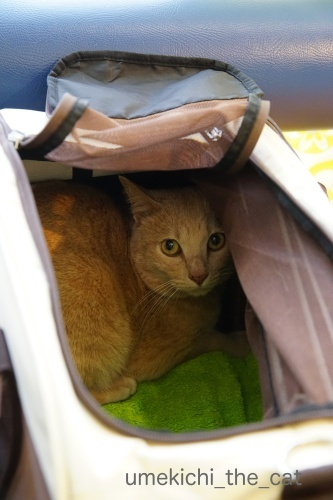
病院に到着。流石にキャリーの隅で小さくなってますよー。
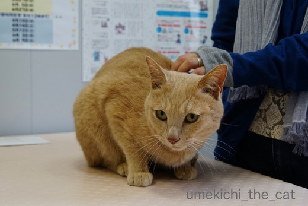
診察台の上で先生待ち。
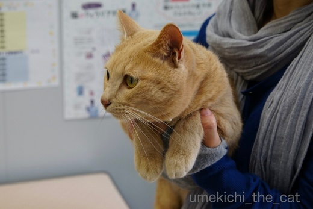
扉を凝視して先生を待ちますよ。

はい＾＾心拍数を計ってお腹モミモミ〜。
今回は「うぉーん うぉーん」唸ってはいましたが恒例の「シャーッ！！！」は無し。
どうしたんだ、梅吉・・・・・
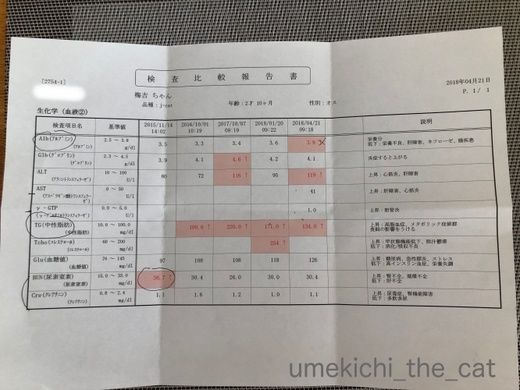
今回の採血結果。
依然基準値越えではありますが中性脂肪値が130くらいまで下がって来ました。
同時に気がかりだった心拍数も今回は130程。
先生もびっくりするくらいの改善傾向。
お薬を追加の必要も無くなりましたよー＾＾
採血の時も（うぉーうぉー叫んではいましたがw)ずいぶん大人しかったようで
「心拍数が下がって気性も穏やかに（本にゃん比）なったんじゃ？梅吉くん！！」
なんて先生も大喜び。シャーッ！！！も言わなかったしね。
このくらい大人しく採血できるなら、となんと！
３ヶ月後にはお腹のエコー検査をすることになりました。
飼い主としては「ほんまにできるんかいな」とちょっぴり思ってますが
先生もプロなので出来るのでしょう。多分。がんばれ、先生(*>艸<)
臓器そのものの状態も気になるところだったのでもちろん良い機会でもありますよ。
梅吉も頑張れー！！
お誕生日前日の病院、まずまずの結果で心底ホッとしました＾＾
「梅吉が毛玉を吐かない」と先生に聞いてみるとずばり「健康な猫は吐きません」と。
（以下梅吉のような短毛種の場合のお話になります）
本来毛玉はうんPと一緒に出てくるもので
頻繁に吐き出す場合には内臓の疾患が疑われる場合があるとのこと。（主に肝臓）
もちろん入浴後に毛づくろいをして大量に毛玉が体内に入った時などは
吐いちゃっても問題はありません。
先代のゲロゲロっ子は確かに肝臓が悪かった・・・
と納得の先生のお返事でした。
梅吉、大変りっぱなうんPをするのでその中に毛玉がある模様。
良かった良かった＾＾
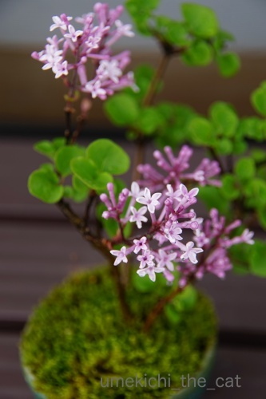
先日は植物園で見てきたライラック。
我が家の盆栽ライラックも咲き出しました。
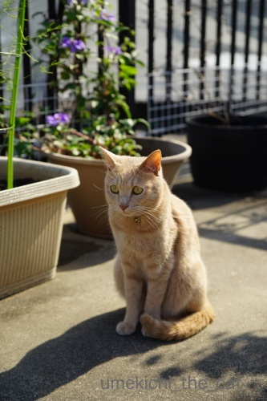
クレマチスも咲き出しました。
クレマチスにボケが入っちゃっていますが「クレマチスとわし」。
ベランダに出たくて催促してくる梅吉ですw
次々盛りを迎えるお花を追って週末はお花見ハシゴ。
まずは葛井寺で藤見。
西国三十三所の５番目の札所である葛井寺。
藤も見頃＆お遍路の方が集まって法会をしていたので大賑わいでした。
境内、何箇所かに分かれて立派な藤棚がありました。
花房が長いもの、短いもの、白、紫、ピンク・・・・・どれも見事！
蜂さんもたくさん集まっておりましたw（これがでっかくて怖いのよ）
最後の写真のだるま藤が気に入っちゃいました。
ピンクのぽってりと丸いお花が特徴です。
移動して今度はツツジ。
大阪近郊で春に咲く花、造幣局の桜が北の横綱だとしたら
南の横綱はこのツツジだと思ってます。
５〜６００メートルくらいにわたってツツジの巨木がうるさいくらいに花を咲かせています。
（クリックで大きくなります＾＾）
パノラマで撮ったので曲がっていますが本当は一直線のツツジの道。
スケール感が伝わるでしょうか。
夏日になった週末の大阪、良いお花見でした。


梅吉と出会った譲渡会

犬猫の理由なき殺処分ゼロ
妄想広告
UMEKICHI 光

爆発的に早い！
時々攻撃的！
Thanks to Mr.Boss365
爆発的に早い！
時々攻撃的！
Thanks to Mr.Boss365

梅吉さんのキャリーバックは別荘付きのように大きくて立派ですね〜
お誕生日を迎えて、シャーを言わなくなって大人になりましたね（笑）
盆栽ライラック、本当に可愛い花です。
私もツツジは見てきましたが、ちぃさんの撮られた巨木のツツジは圧巻ですね。
見事な藤の花の葛井寺、ネットで調べてみましょう（笑）
by kiki (2018-04-23 15:53)
「漢 梅吉」さんとしては病院で騒ぐのは子供のすること！
でしょうか(^O^)
いそいそとキャリーに入ってくれるって良いですねぇ＾＾
うちは病院に行こうとキャリーの場所を変えると
蜘蛛の子を散らすように逃げます(*_*)
梅吉さん、数値が下がって安定して本当によかったです(^_^)v
この調子で頑張れ～!(^^)!
by ニッキー (2018-04-23 16:10)
数値が順調で良かったです(#^.^#)
漢はじっと耐える？でしょうか（笑
協力的で良い子でしたね！
エコー検査もその調子で頑張ってくださいね！！
by きぃ (2018-04-23 16:39)
「シャーッ！！！」と言わなくなって、また大人の階段のぼりましたね(〃'∇'〃)
お誕生日についての記事は次回かしら(^_^;) 葛井寺は藤が有名なんですね(ﾟoﾟ;)
素敵な藤棚の御写真を拝見して、花山院の御詠歌「参るより頼みをかくる葛井寺
花のうてなに紫の雲」の「紫の雲」は藤の花のことかと気付きましたよ(￣◇￣;)
by middrinn (2018-04-23 16:47)
エライぞっ、梅吉さん！！
ウーーシャーーーなんて、お子様のすることや、と
お気づきになったのでしょうか？
オトナじゃーーん(^^♪
そして、検診結果が良いのは、何よりうれしいですね。
おとーさんとおかーさんの頑張りに応えてくれる梅吉さんは、
それが一番の、親孝行とわかってるのでしょう。
ところで、ちぃさんのガーデンにも、春が訪れてますね♪
ブルー系が多いのでしょうか？
私も、ブルー＆ムラサキの花が大好物でございますぅ。
by morichan (2018-04-23 16:52)
すごいですね～！数値が良くなって性格まで温厚？になった？
まずは、エコー検査をクリヤーして、
次は胃カメラまでやっちゃいましょうか～！(^_^;)
by よーちゃん (2018-04-23 17:59)
梅吉さん、数値が良好で良かったですね(^_^)
毛玉は必ず吐くものだと思っていたのですが、健康な猫はウンｐと一緒に出てくるんですね。恥ずかしながら初めて知りました！
by kou (2018-04-23 18:03)
梅吉さん3歳になったんですね。おめでとう!
病院通いに慣れて落ち着いて来たのかな。えらいぞ梅吉さん。
藤もツツジも綺麗ですね~。白い藤も良いなぁと思ったし、こんな巨大なツツジ並木は見たことないです。
by zombiekong (2018-04-23 18:51)
心拍数さがったのですね。よかった～。薬も増えないんですね。よかったよかったヽ(^。^)ノ
ナノもきなこも毛を吐かないので心配してましたが、うんPと出ているんだ。情報ありがとう(*^_^*)
by palpal (2018-04-23 18:57)
梅吉さん検査結果がまずまずで良かったですね！
シャーを言わなかったのは段々蛇ににらまれた蛙状態でしょうか(^^)
by ma2ma2 (2018-04-23 19:57)
わー、良かったですね！漢道としては、シャーから器を広げて成長しているんでしょうね。そこには、おなごハンの存在も大きく、深い愛に包まれているからこそなんだろうな♡ 極めてほしい！君ならできる！！
by Ginger (2018-04-23 20:50)
さすが梅吉さん、病院行きも落ち着いたものですね(*^▽^*)
まずまずの検査結果で何よりです。
こてつもお風呂に入れた後に狂ったように毛づくろいして毛玉を吐きまhしたが、それ以外はコロコロでむしり取っているせいか、吐かずに済んでいます^^
藤棚が美しいですね♪
紫と白はよく見ますが、ピンクは珍しい気がします！
by ゆきち (2018-04-23 21:20)
キャリーに入っちゃう梅吉さん、素晴らしい！
ウチなんか、キャリーに入れようとしたらこの世の終わりのような鳴き声を立てます。^^;
検査の結果、数値は良好とのことで何よりです。
長毛のうちのヤツは、ウンPだけでは間に合わないのか、この季節はゲ○をする回数が多いです。（今日も知らずに踏んづけました。^^;）
猫草を与えて、ゲ○を促しているせいもあるにはあるのですが。
藤が綺麗ですね。ツツジのボリュームがすごいです！^^)
by yes_hama (2018-04-23 21:27)
うちの子たちはビビリなので
先生に威嚇するより逃げる方が先で・・・＾＾；
お腹に膿が溜まった末娘をエコー検査した時は
足で蹴られて流血しました。
by ぽちの輔 (2018-04-24 07:22)
梅吉君すごーい！
シャーって言わなかったのね^^
＞心拍数が下がって気性も穏やかに
これホントだと嬉しいね^^
おなかのエコー、うみはやってます。彼女は診察台では諦める子なので、
ヘソ天した状態でやられてましたよ(笑)
梅吉君頑張れ！
たしかに先代猫（長毛だけど）も毛玉はよく吐いていて肝臓が悪かったです。
あおうみも長毛ちゃんだけど、毛玉を吐くのはシャンプーをしたあとくらいで、普段はうんPと一緒に出てるわ。健康のしるしね^^
安心！
by リュカ (2018-04-24 10:40)
ライラックのそばで佇む先生に、
ガブッと！^ ^
by KENT0mg (2018-04-24 12:25)
梅吉くん、お誕生日おめでとう♪
お誕生日の前に検査でいい結果が出て良かったね。
もっともっと良くなることを祈ってるよ♪エコーも頑張ろ～う！
マイルドになった梅吉くん(≧▽≦)
キャリーにも自分から入って、病院でも我慢して。いい子だね～。
家は大げさな子が多かったから、いい子だったのはポロンくらいで。
今はタラをワクチンに連れて行く時期が近づいてくると恐怖です(^-^;
by emi (2018-04-24 15:29)
キャリーに自分で入るんですね、梅吉さん。
シャーッもしないんですね。
お利口過ぎて・・・・
梅吉さん、愛おしいです(^^)
by riverwalk (2018-04-24 22:09)
梅吉さん お誕生日おめでとう
![[黒ハート]](https://blog.ss-blog.jp/_images_e/136.gif) 」
」
３才 まだまだ若いね♪
藤井寺に住んでいても
藤の花の咲く頃に
行ったことがないのです
キレイに咲いているんですねぇ
浅香山のツツジは子供が小さい時には
よく行きました
ツツジが大きくなっていてびっくり！
（久しぶりに行ったのが10年前）
いつでも行けると思っていると
なかなか行かないもんですね
今年はどこもツツジがよく咲いています
我が家も咲きました
30個ほど咲いています
ツツジの花は長く咲くのですね
花好き夫は「よう咲いてるなぁ
ニヤついてます
by ヨッシー (2018-04-24 22:19)
おもしろいキャリーケージですね。アコーディオン・・・
マイルドな反応に経過良好な結果で良かったですね。
えっ、健康なネコは吐かないんですか！？肝臓！？
うちの獣医さんは、ただ吐くだけなら問題ないといつも言いますが・・・。
（「ネコは吐くものだ」的な印象があるのですが・・・）
白い藤がすごくステキです。
一面甘い香りが漂ってそう（*´∀｀*）
ミツバチさんとクマバチさんは怖くないですよ*^^*
by Ja-Kou66 (2018-04-24 23:59)
kikiさん＞
はい＾＾サイドにサンルームがついてます（笑）
シャーは今回たまたま言わなかっただけかもー。
でも、先生がエコー検査を予定したことを後悔しない様に
梅吉にも頑張ってもらわねばなりません(^▽^;)
藤はこの雨で散ってしまっていなければ良いのですが・・・
ニッキーさん＞
漢 梅吉、３ちゃいの矜持でしょうか(*>艸<)
いそいそとキャリーに入る梅吉ですが
チャックを閉めようとすると流石に嫌な予感がするのか
ちょっとは抵抗するのですよ(^▽^;)
でも楽なものですー＾＾
検査数値はこのまま安定を保って行きたいです。
きぃさん＞
ひとまずホッとした検査結果でした＾＾
エコー検査もぜひぜひ協力的にこなして欲しいのですが
果たしてどうなることやらです(^▽^;)
middrinnさん＞
のぼりましたよー。梅吉シンデレラボーイですから(〃▽〃)
葛井寺、確かにあれだけ藤の花が咲いていると
紫の雲がたなびいている様な感覚がしそうです！
四番札所の布施寺からぜぇはぇしながらたどり着いて
かすみ目にもなっていそうだしw
葛井寺は南大門の仁王像もなかなかの迫力ですよー＾＾
morichanさん＞
オ・ト・ナの漢のわりにはちゅーちゅーが大好きなんですけどね(*>艸<)
病院で騒いでも喚いても疲れるだけなので
今後もおとなしく診察を受けていただいきたいものです＾＾
そして数値もこのまま安定意を保って欲しいです！！
ブルー＆ムラサキの花大好きですよー！
さらにプラス白、で我が家のガーデンの出来上がり〜という感じです(^_－)☆
よーちゃん＞
先生の買い被りすぎじゃ・・・とも思うのですが(^▽^;)
確かに最近はあまり激しくガブガブもしなくなったので
もしかしたらそうなのかも！
胃カメラ・・・怖い怖いwカメラ噛み砕きそうwww
kouさん＞
前回の検査ではお薬の効果がイマイチだったので
今回の結果は本当に安心しました＾＾
私も「猫は吐くもの」と思っていたのでびっくりでした。
先生も世間一般では「吐く」というイメージが浸透しすぎていて・・・
と苦笑いでしたw
zombiekongさん＞
お祝いのお言葉ありがとうございますm(_ _)m
梅吉からも「おおきにやで」とのことでした＾＾
わたしもツツジは庭木で低く育つものと思っていたので
この巨木群を見たときには驚きました〜。
剪定しないと大きく育つ様ですよ。
実際年々大きくなっているのを実感しています。
palpalさん＞
お薬の効果が出てきてホッとしました＾＾梅吉親孝行！！
先生も「世間には猫は吐くって浸透しすぎ」と
苦笑いでした。
梅吉のうんPの中の毛玉、突き止めたくなってきた・・・
ma2ma2さん＞
梅吉はにらまれたらがぶり返す方なので
諦めの気持ちの方が強そうです(^▽^;)
Gingerさん＞
梅吉、また一つ漢として大きくなったのでしょうか(〃▽〃)
それを支えるべくしっかりサポートしたいと思います。
でも最近ますます甘えん坊なんですよね〜＾＾
by ちぃ (2018-04-25 15:58)
診察時も温和しいんですね、では安心かな？。
今は藤やツツジが綺麗な時期で楽しめますね。
by 旅爺さん (2018-04-25 16:59)
ゆきちさん＞
病院への道行きは景色を眺めたりして結構楽しんでいる様な＾＾
病院へ着くとコチンとしていますが(^▽^;)
こてつくんはコロコロエステで毎日お手入れしてもらってますものね。
あとはうんPで排出！健康で何よりです！！
私もピンクの藤は初めて見ました。
他の木に比べて若干小ぶりだったので比較的最近植えられたのかな？
今後が楽しみでもあります。
yes_hamaさん＞
キャリーについては「少しは用心せんかい！！」って思うのですが (^▽^;)
病院へのストレスが少ないので良し、ということでw
アズ氏の様な長毛種さんはうんpだけでは間に合いませんよね・・・
季節限定の毛呂毛呂なら健康な証拠ですね〜。
ツツジの巨木は本当にすごいです。圧倒されますよ〜。
しかも年々木が大きくなっているので今後も楽しみです♪
ぽちの輔さん＞
末娘ちゃん、辛いエコー検査でしたね・・・
梅吉のエコー検査はどうなることやらです。
採血もなのですがおそらく飼い主から隔離されての検査かと。
見学を申し出たい気もするのですが
見られていると色々とやりにくいんだろうなぁ・・・
リュカさん＞
たまたまだったんじゃないか・・・
という気がしないでもないんだけど(^▽^;)
でも最近エキサイティングながぶがぶをあまりしなくなったの。
大人になって落ち着きが出てなおかつ体調も良いのかな。
だったら嬉しいな♡
（がぶ吉もめんこいんだけどw)
梅吉がヘソ天でエコー・・・想像できない！無理だー無理ー！！
後日の報告をお待ちください(*>艸<)
毛玉はうんPで、安心しました。
吐かない猫は梅吉が初めてなの〜。
KENT0mgさん＞
惜しい！クレマチスだよーん！！
ガブっとありがとうございます＾＾
by ちぃ (2018-04-25 17:54)
梅吉さん、いそいそとキャリーに入ってくれるなんて、いい子～＾＾
しかも、さすが３歳、お行儀良くなった？
あんまり怖い目にあわずに済んでいるからかしら。
うちのみゅんはカテーテルが痛かったらしく、その後はもう大変で‥絶叫しまくり。
いぜん飼っていたおっとりした猫は蓋のないバッグで連れていけたのを思い出して遠い目に＾＾；
綺麗なお花～見事なツツジの巨木、すごいですね＾＾
by sana (2018-04-25 19:45)
emiさん＞
お祝いのお言葉ありがといございますm(_ _)m
エコー検査、ほんと頑張って欲しいです！
さらなる安心材料が欲しいもの・・・
普通はキャリーを見たら逃げるよね(*>艸<)
タラ君はさらに鳴き叫ぶのかしら・・・
鳴き叫ぶタラ君の声にくるみちゃんまでパニックになりそう。
ワクチン接種、みんにゃとemiさんもがんばれー！！
riverwalkさん＞
キャリーのチャックを閉めようとすると若干抵抗しますが・・・
それでも鳴き叫んだりはしないのですよ＾＾
梅吉、本当に良い子で愛おしい子です！！
ヨッシーさん＞
梅吉へのお祝いのお言葉ありがとうございますm(_ _)m
すくすくと男の子らしく元気に育ってくれてます＾＾
だいだいあの辺かな？と私が想像していたヨッシーさんのお住まい
イイ線いっていました＾＾
浅香山と一目でお判りなるのは流石です！
ツツジは本当に年々大きくなってびっくりします。
ヨッシーさんの様に昔からご存知なら
なおさらその成長ぶりにびっくりしちゃいますよね＾＾
苦節ウン年のご自宅のツツジに咲いたのですね！
ご主人毎日ニヤニヤが止まりませんね(*>艸<)
by ちぃ (2018-04-25 20:48)
漢 梅吉さん、エライぞ～＾＾
毛玉の件、とても勉強になりました。
ありがとうございます(*^^*)
元気な証拠で、良かったです＾＾
「クレマチスとわし」も良いお写真です(*^^)v
梅吉さんのキャリーは、広がって大きくなる優れものですね。
うちのは、何か使い勝手が悪いのでリュックになるのを
買おうかと考え中です( ´艸｀)
by マーヤ (2018-04-26 01:13)
Ja-Kou66さん＞
キャリーは両翼開きのタイプもあったのですが
ちょっと大げさだったので一翼にしました(*>艸<)
メッシュになっているので開放的で気に入っている様です。
お、吐く問題、獣医学会で見解の違いがあるのでしょうか (^▽^;)
私も猫は吐くものと思ったのでびっくりしましたけどw
梅吉の場合は毛玉はうんPで出ている様なので良し、と
とりあえずは納得して帰ってきましたよー＾＾
ハチさん、いかつい外見が苦手なんですー。
騒いじゃいけないんですよね・・・ぐっとがまんしています。。。
旅爺さん＞
コメント＆nice!ありがとうございますm(_ _)m
以前はもっと「フーッツ！シャーーッ！！うぉーーーーーん！！！」と
飼い主が恐縮するほど騒がしかったのですが
ここ２回ほどの診察時は温和しくて・・・
抵抗しても無駄だ、と諦めの気持ちなのでしょうか (^▽^;)
藤もツツジも花盛り♪
今日はご近所の庭のバラも咲き出していました＾＾
連休中にはバラ見に行こうと思っています！！
sanaさん＞
病院慣れ、したのでしょうか＾＾
そのうち先生にすりすりするようになるかも！？
カテーテルは人間でも嫌ですものね。
みゅんちゃんの恐怖、分かります。でも治療も大事・・・
sanaさん切なかったですね・・・
ツツジは年々大きくなっています。
どこまで大きくなるのかしらー＾＾
マーヤさん＞
とりあえず、和猫、短毛のあかりちゃんは梅吉と同じく
吐かなくても大丈夫な様ですよ＾＾
今度うんPをじっくり観察して見てください(*>艸<)
背負うタイプのキャリー、良いと思います！！
肩掛けタイプは脱臼しそうになるし・・・
うちはしばらくこのタイプで我慢して
おっとも私も体力がなくなったら
リュックを飛び越してカートタイプかなぁ・・・
by ちぃ (2018-04-26 16:09)